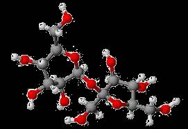

Cognitive Approach to NLP
Introduction to Procedural Semantics
La vanille est une épice constituée par le fruit de certaines orchidées lianescentes tropicales
→ Vanilla is a spice made from the fruit of certain tropical vine orchids.- "Can you get the little red book on the right stack on my desk?"
→ which book?
- "The trophy would not fit in the suitcase because it was too big"
→ what does "it" refer to?
(cf. Scott, T. (2020). The Sentences Computers Can’t Understand)
- "A small galaxy" vs. "A small molecule" → definitely
not the intersection with the set of small objects
 "I lost my keys to the right of the tree."
"I lost my keys to the right of the tree."
→ how far away from the tree? 1cm, 1km?
 "He felt so lonely in this desert that he used to walk backwards sometimes to see footsteps in front of him."
"He felt so lonely in this desert that he used to walk backwards sometimes to see footsteps in front of him."
(after Hortence Vlou)
→ whose footsteps are we talking about?
and then to execute the resulting Prolog program using a knowledge base.
| book('Kritik der reinen Vernunft’, yellow, left) |
| book('Des intelligences TRES artificielles’, white, right) |
| book('On the origin of species’, beige, right) |
| book('La serpe d'or’, white, left) |
| book('The geometry of meaning’, white, right) |
| book('Metaphors we live by’, red, right) |
"the little red book on the right stack on my desk"
?- book(T, red, right).
T = 'Metaphors we live by'.
- the evaluation of predicates isn’t purely logical, but requires analog computation
(e.g. "small", or "to the right of the tree")
- undertanding requires visualizing the scene
("walk backwards to see footsteps")
- interpretation depends on semantic constraints
(binding, aspect...)
 We will be able to interpret
We will be able to interpret
"the pawn to the right of the white knight"
as meaning:
pawn(black,(2,5))
(the black pawn at location (2,5))
we will consider
- the contrast operation and
- the rules of Aspect.
Cognitive Approach to NLP
Introduction to Procedural Semantics
teaching.dessalles.fr/CANLP